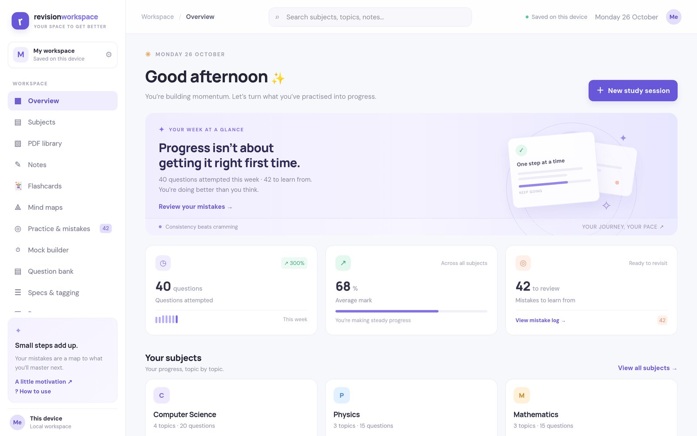

01 / Web app · Built with AILive · 5 users
Revision Workspace
A revision web app for A-level students: annotate past papers with a stylus, mark your answers and track the mistakes you keep making. Deployed on Vercel with a Supabase backend.
- Problem
- My revision was split across PDFs, paper and notes, with no record of what I kept getting wrong.
- My role
- The idea, every feature and screen, testing it on my own revision, and getting it live for other students.
- Built with AI
- I can't write React or TypeScript yet, so the code was written by an AI coding agent that I directed. That includes the past-paper parser, which finds each question in an AQA, OCR or Edexcel PDF and links it to the mark scheme.

